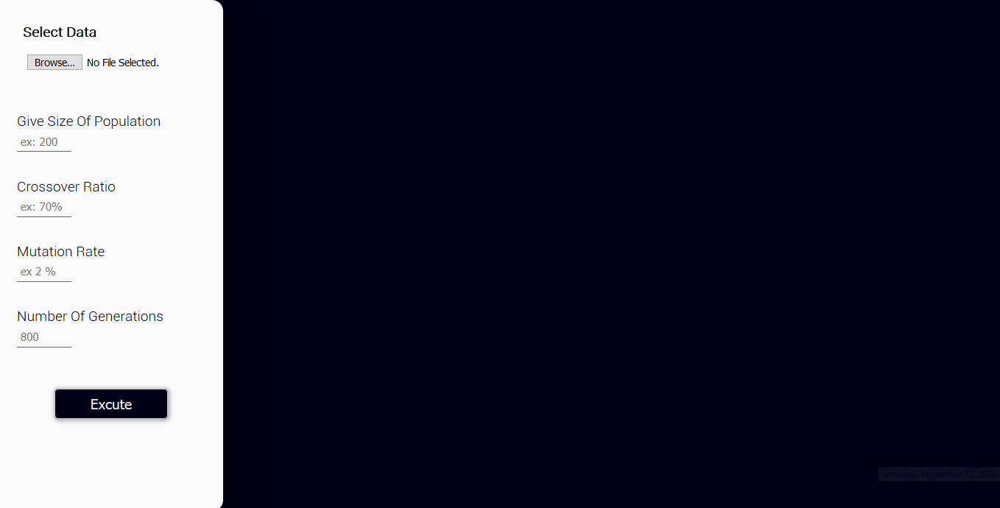

Notes
Since the current health conditions and the status of the Internet that doesn't allow us do a discussion over a video connection, I created this file to explain a little bit this project (sorry about the language mistakes :v)
I know very well that the browser isn't the best place for this type of projects that needs a high performance , speed... and obviously browser isn't the right place , but i like web development and i try to build every project on form of a web app to learn more and get more experience in this field.
In addition to that , i want to publish this project on my protfolio so i spent more time on it , I added some things , i worked more on interface and design ...
I would like to notice that every line of code in this project all algorithms and design i personally wrote it from scratch.
Languages Used:
HTML , CSS , vanilla javascript (vanilla JavaScript means No libraries No frameworks Nothing Just the programming language itself.)
How to use
please open the index.html file with your browser , updated mozilla firefox or google chrome (recommended)
interface :
when you open the index.html file the interface should looks like this :
steps :
give valid input
when you select data the interface should looks like in the image below :
click on a customer , his informations will show on the right of the interface
valid input :
1. Size of population
The initial population is a group of potential solutions this solutions created based on heuristics algorithms like savings of clarke & wright and others , there is some randomness in the creations i used 2-opt and or-opt swap in random way ( random routes , points of swap up) to create diversity that give chance to get members with high fitness
So big number of population give more diversity and chance to get best
solutions but long time of execution .
[200,400] is a good number of population.
2. Crossover Ratio
It is the percentage of the population with the highest fitness that selected to be the parents in crossover to create new genes (or children )High percentage (ex: 90%) give the chance to members with bad fitness to meet members with high fitness and that give us bad child... best ratio [70%,60%]
3. Mutation Rate
It is the possibility to every gene to change its place in DNA array , High rate it's totally randomness because each gene will change its place and that gives us a random genes and a child with bad fitness (just like in the real life lot of genetic mutations gives unhealthy child)then the final result will be the result of heuristic algorithms and we don't want that ,best Mutation Rate [2.5 %, 1%]
4. Number of Generations
big number of generations means high possibility to get optimal solution but long time of execution too . [1000,2000] its a good number of generations
RESULTS :
final results should shows up like this: